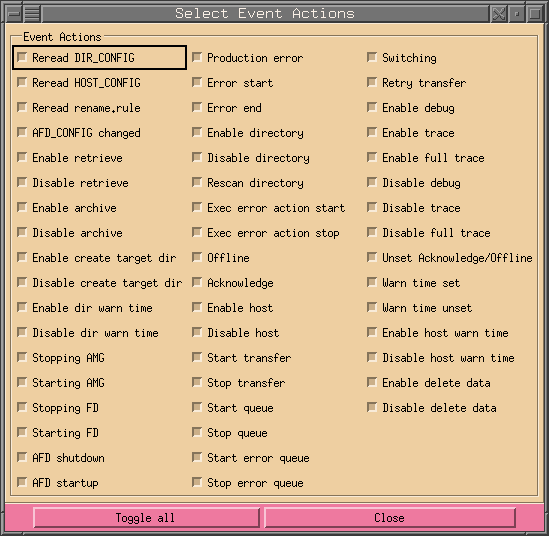
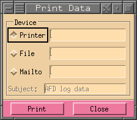

Holger.Kiehl@dwd.de
Last updated: 04.03.2023
![[red dot]](../images/reddot.gif) IndexHome
IndexHome
All events that occur within AFD, can be viewed with the help of this dialog (see Event Log). Since the event log can be very extensive, there are lots of possibility to reduce the search time by filling in some of the following values:
| 1 | Enter the start and end time of the search. If no value is entered it will always take the earliest or latest entries it finds. There are two time forms. One is the absolute and the other is the relative time format. The following absolute forms are possible: MMDDhhmm, DDhhmm and hhmm (MM = month [01-12], DD = day [01-31], hh = hour [00 - 23], mm = minute [00 - 59]). The relative form always starts with a hyphen '-' and has the following format: -DDhhmm, -hhmm or -mm. | |
| 2 | When set the event log will be shown continuously, ie. if new entries come they will be shown live as they come in. | |
| 3 | Shows the current date and time in the following format: DD.MM.YYYY hh:mm | |
| 4 | Enter a host alias name. The name may contain wildcards (*,?,[]). Multiple names can be entered by separating them with a comma (,). If no host alias name or wild card is entered it will always search for all host alias names. | |
| 5 | Enter a dir alias name. The name may contain wildcards (*,?,[]). Multiple names can be entered by separating them with a comma (,). If no dir alias name or wild card is entered it will always search for all dir alias names. | |
| 6 | Enter a search pattern for the Additional Information part. Again one may enter wildcards (*,?,[]). | |
| 7 | Here you can narrow down the search by just searching for certain event class. | |
| 8 | Here you can narrow down the search by just searching for certain event types. | |
| 9 | The dialog on the right will show up when this button is pressed. It allows to narrow down the search for the different event actions. Any changes made here will take immediate effect, so it is not necessary to close the window. |  |
It is not necessary to fill in any values, however then the search might take a very long time for it to finish, depending on how long and how many log files there are. While the dialog is searching for data, the function of the search button changes into a stop button, enabling the user to interrupt the search. This button and the slider of the list widget are the only buttons that are active during a search. Thus, the user can search in the list widget by using the slider, while the dialog is still searching. Once a search is interrupted, the search will always start from the beginning.
Here follows a short description of the text widgets and the meaning of each item:
| Date | The date in the following format: MM.DD. where MM is the month (01-12) and DD is the day of the month (01-31). |
| Time | The time in the following format: hh:mm:ss where hh is the hour (00-23), mm is the minute (00-59) and ss is the second (00-59). |
| C | The event class. |
| T | The event type. |
| Alias | Either host or directory alias. This can also be empty. |
| Action | The event action. |
| Additional Information | Here information such as the user responsible for the event and/or the reason for this event might be shown here. |
Under the text box follows a status line showing the number of events found and the size in bytes. At the end will be the time taken for the search in seconds.
At the bottom is a line with three buttons which have the following meaning:
| Search | Pressing this button will start the search. During the search the name of the button will change to Stop. Pressing this will interrupt the search and the button will be renamed to Search again. Pressing search again will start the search from the beginning and not where it was when it was interrupted. | |
| This will popup another dialog which can be used to print what is shown to a separate file, send it in a mail to someone or print it to a printer. |  | |
| Close | Closes this dialog. |
|
Copyright © 2007 - 2023 by H.Kiehl Holger.Kiehl@dwd.de Last updated: 04.03.2023 |
Index |
Home |